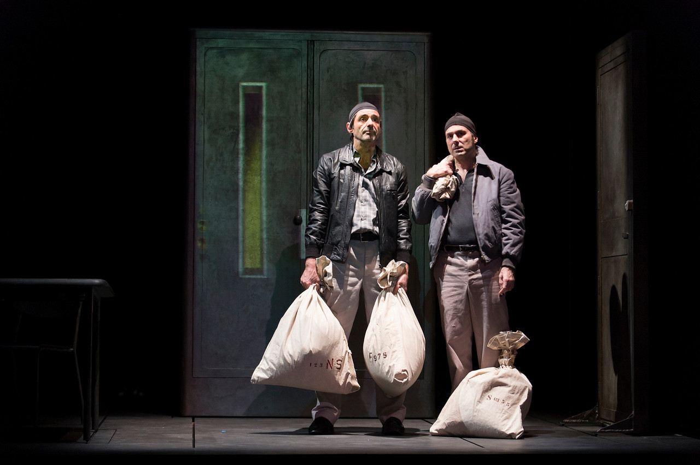
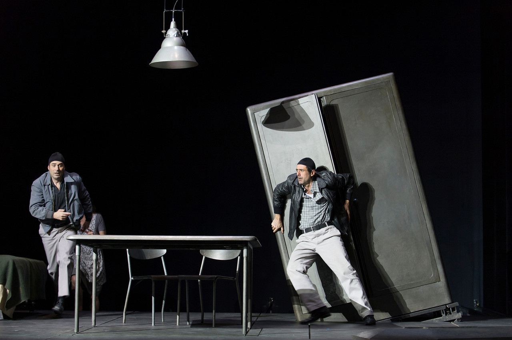
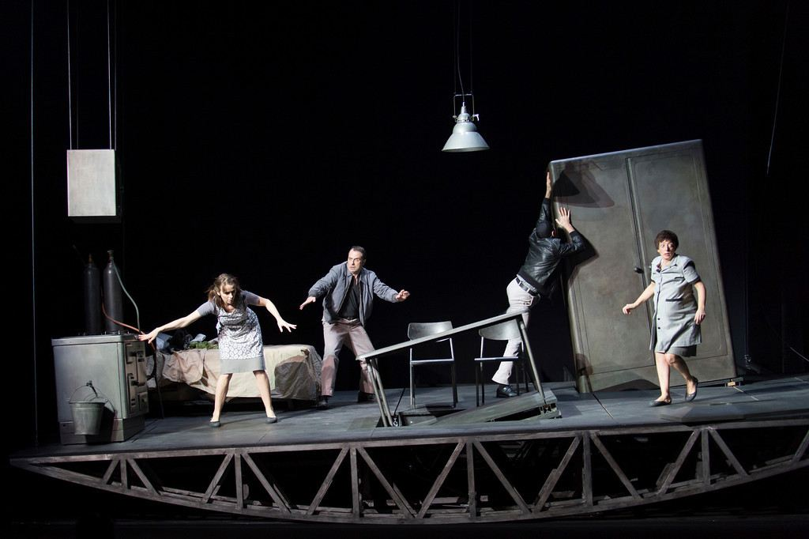
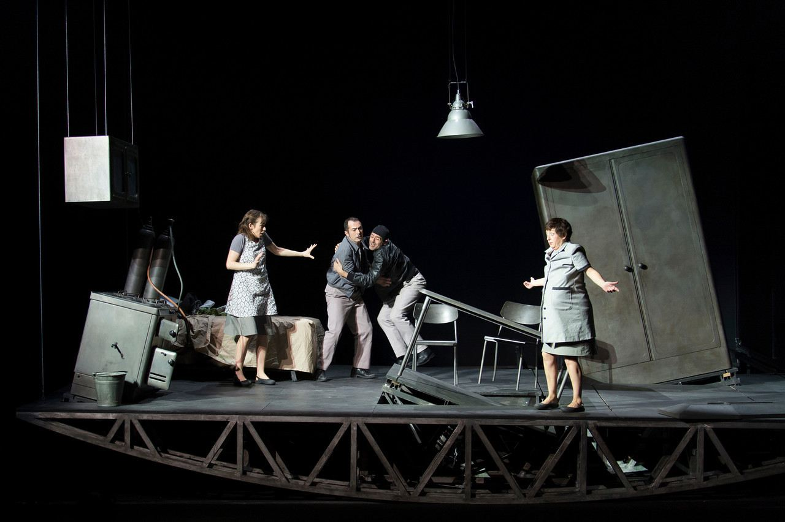
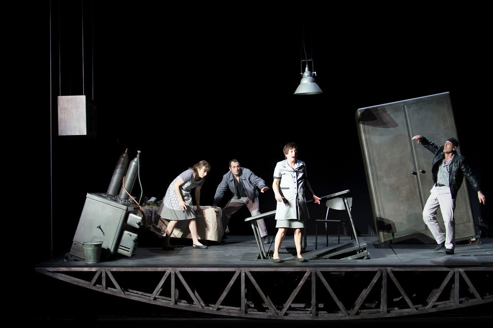

On Ne Pais Pas — produzione teatrale con la regia e le scene di Cristian Taraborrelli. Un'opera che attraversa le frontiere linguistiche e culturali tra Italia e Francia in una creazione scenica di grande impatto visivo.
On Ne Pais Pas — a theatrical production directed and designed by Cristian Taraborrelli. A work that crosses linguistic and cultural boundaries between Italy and France in a scenic creation of great visual impact.
On Ne Pais Pas — production théâtrale mise en scène et décors de Cristian Taraborrelli. Une œuvre qui traverse les frontières linguistiques et culturelles entre l'Italie et la France dans une création scénique d'un grand impact visuel.
Gallery






Tags